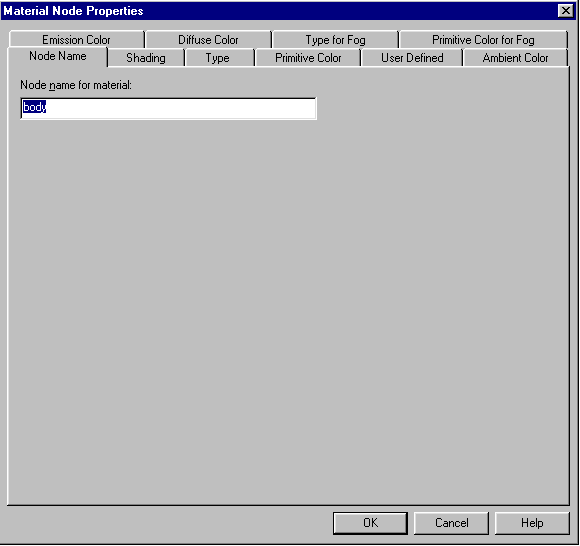
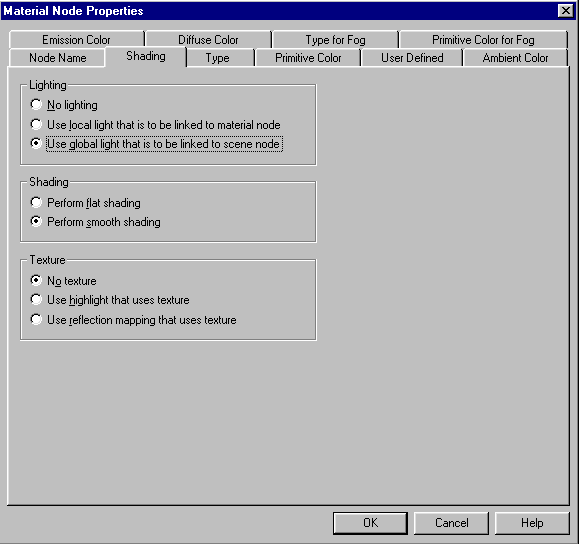
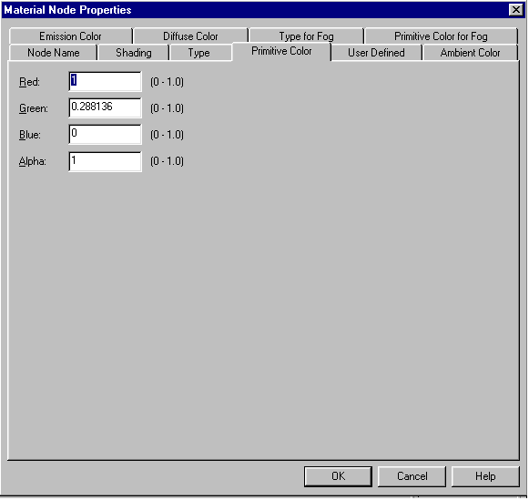
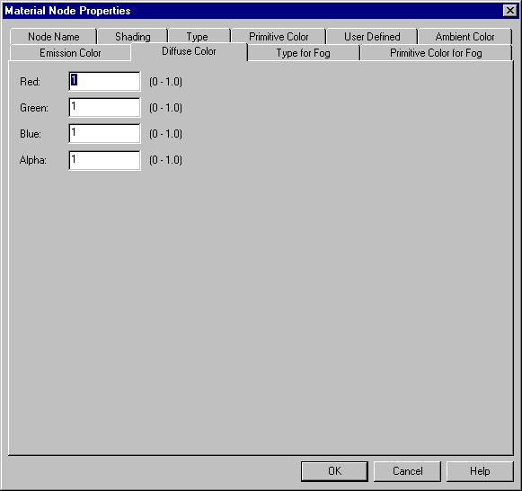
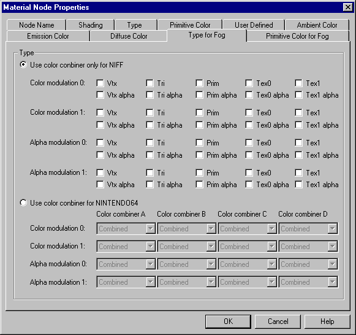

The following tabs are available in the Material Node Properties dialog box:
The [Node name] tab sets the name of the Material node.

If the node is linked, the node name is displayed in the [Node name for material] text box. If it is not linked, then "Unknown" is displayed here. To change the node name, edit the name that is displayed. To specify a new name for a node that is not linked, delete "Unknown" and input the desired name. Conversely, to delete the node name, delete the name that is displayed in the text box. Please note that ASCII characters from "!" (0x21) to "~" (0x7e) can be used for node names. In addition, node names cannot contain spaces, nor can they contain kanji, hiragana or katakana characters.
Use the [Shading] tab to specify material shading.

Under [Lighting], select one of the following effects:
Use the [Shading] tab to specify the shading information by selecting one of the following items:
Under [Texture], specify the use of textures.
Use the [Type] tab to specify the material type.

Under [Type], specify one of the following material types:
When [Use the NIFF-dedicated color combiner] is selected, the respective NIFF-prescribed flags are set to the items [Color modulation 0] through [Alpha modulation 1]. When [Use the NINTENDO64 color combiner] is selected, the flags are selected from any of the NINTENDO64 color combiner input sources.
Use the [Primitive color] tab to specify the material's primitive color settings.

Use the [Primitive color] tab to specify the material's primitive color settings. Specify Red, Green, Blue, and Alpha components of the primitive color of the material as floating point values from 0 to 1 in [Red], [Green], [Blue], and [Alpha].
Use the [User Defined] tab to specify to set user definitions.

Use hexadecimal values to specify 32-bit user-defined data.
Use the [Ambient color] tab to specify the ambient color of a material.

Specify the red, green, blue and alpha components of the ambient color in the [Red], [Green], [Blue] and [Alpha] fields using floating point decimal values from 0 to 1.0.
Use the [Emission color] tab to specify the emission color of a material.

Specify the red, green, blue and alpha components of the emission color in the [Red], [Green], [Blue] and [Alpha] fields using floating point decimal values from 0 to 1.0.
Use the [Diffuse color] tab to specify the diffuse color of a material.
Specify the red, green, blue and alpha components of the diffuse color in the [Red], [Green], [Blue] and [Alpha] fields using floating point decimal values from 0 to 1.0.
Use the [Type for Fog] tab to specify the types of the materials in the scene that use fog.

Choose one of the following material types:
If you choose [Use color combiner only for NIFF], specify the flags to be specified by NIFF by selecting the appropriate checkboxes for [Color modulation 0], [Color modulation 1], [Alpha modulation 0], and [Alpha modulation 1]. If you choose [Use color conbiner for NINTENDO64], specify one of the flags for the color conbiner source for Nintendo64
Use the [Primitive Color for Fog] tab to specify the primitive color of the materials in the scene that use fog.

Specify the red, green, blue and alpha components of the primitive color in the [Red], [Green], [Blue] and [Alpha] fields using floating point decimal values from 0 to 1.0.